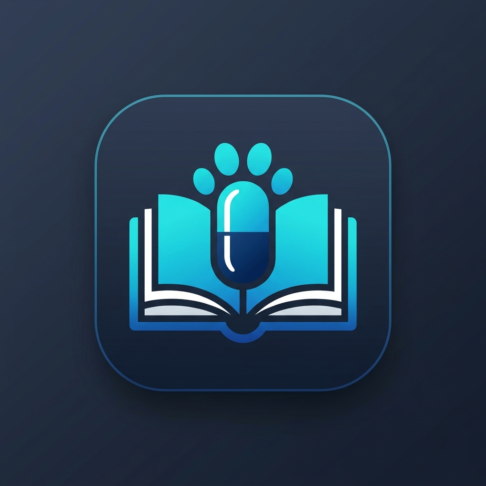
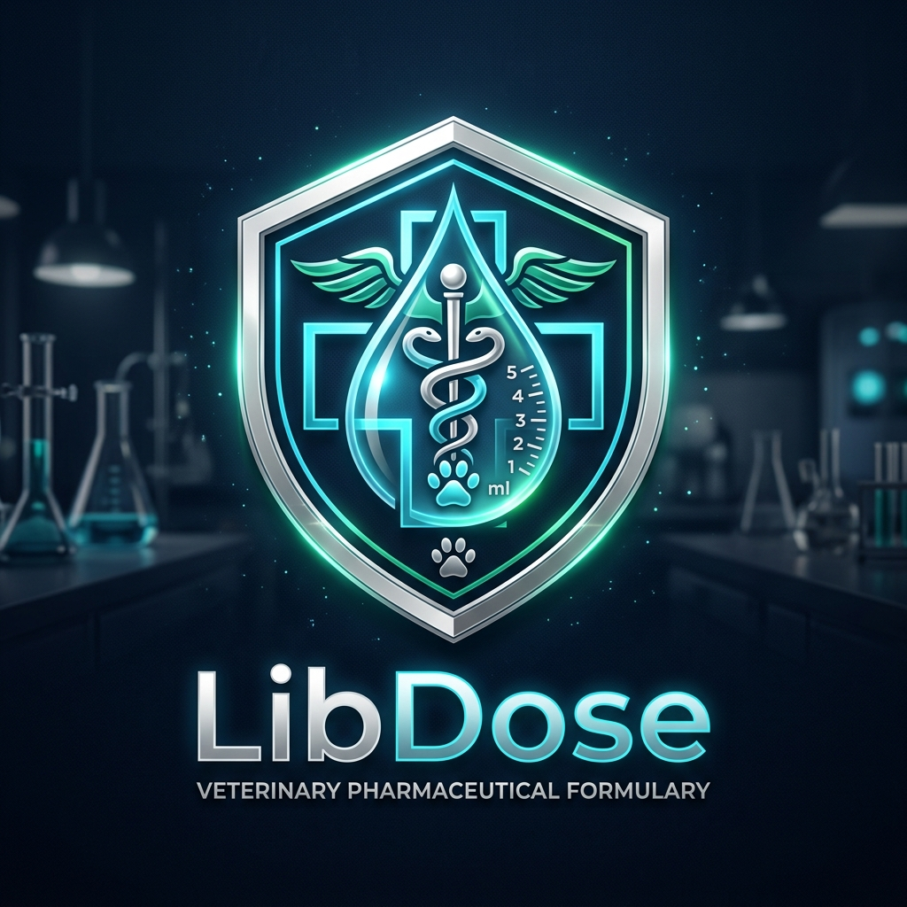
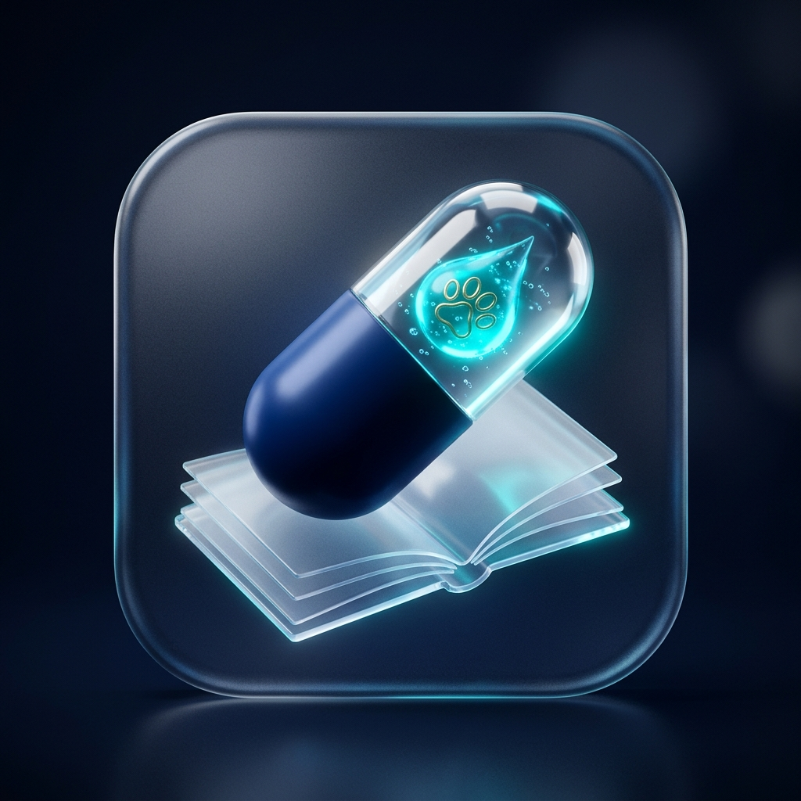

۳ کانسپت اصلی طراحی لوگو (وکتور برداری تیز و بدون افت کیفیت)
طراحیشده بر اساس استانداردهای بصری و پزشکی ۲۰۲۶ با تناسبات طلایی

کانسپت ۱: تلفیق دانشنامه و کپسول بالینی
ترکیب ارگانیک کتاب باز (Lib) با کپسول دقیق دارویی (Dose) و نشان سهنقطهای ردپای دامپزشکی (Vet). بسیار شفاف، مدرن و گویای ماهیت دارونامه.

کانسپت ۲: نشان سپر بالینی و ایمنی بیمار
طراحی با الهام از نشانهای استاندارد سازمانهای بهداشت و درمان بینالمللی؛ نماد سپر اعتماد (Shield)، صلیب بالینی و سنجش خطای صفر درصد در دوز دارو.

کانسپت ۳: مونوگرام هوشمند LD
ترکیب تایپوگرافی مدرن حروف اختصاری L و D که فرم حلقه کپسول و قطره تزریق وریدی را بازآفرینی میکند. بسیار مدرن و مینیمال شبیه اپلیکیشنهای سیلیکون ولی.
شبیهسازی آیکون برنامه روی صفحه نمایش گوشی (PWA App Icon)
وقتی دکترها گزینه «افزودن به صفحه اصلی» را در آیفون یا اندروید لمس میکنند، آیکون برنامه اینگونه ظاهر میشود:
تست مقیاسپذیری و وضوح در ابعاد ریز (Favicon & Navigation Bar)
یک لوگوی حرفهای باید حتی در اندازه ۱۶ پیکسل در تب مرورگر هم کاملاً قابل تشخیص و خوانا باشد: